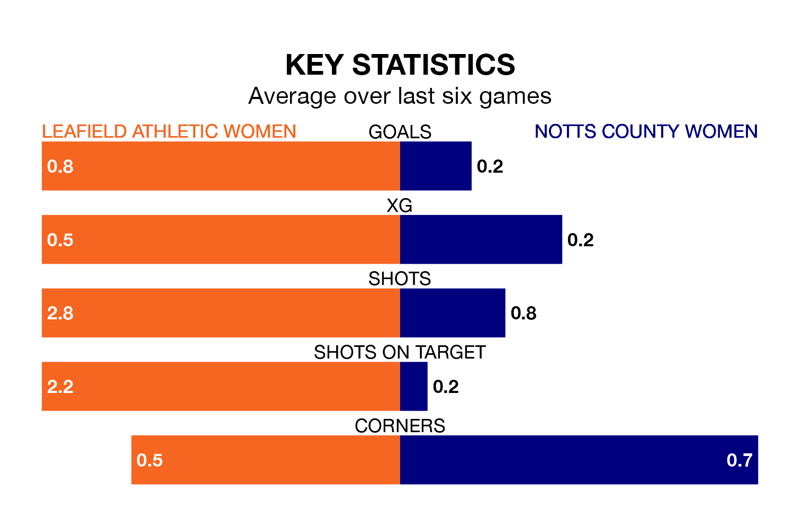

Sunday's early match sees two relegation candidates play each other, as bottom of the table Leafield Athletic Women host 10th-placed Notts County Women.
Leafield Athletic have picked up six points from their first six Women's National League Division One – Midlands games, with one win and three draws.
That is three points less than Notts County have collected, having won two and drawn three.
Leafield Athletic are in terrible form in Women's National League Division One Midlands, with no wins and two draws from their last six games.
And also with no wins and two draws over that period, Notts County's form is identical – they have both taken two points from 18.
With 12 goals in 14 games so far this season, the hosts are the league's second-lowest scorers with 0.9 goals per game. And they are conceding more than average, letting in 36 goals at a rate of 2.6 per game.
The away team are also below average scorers, with 0.9 goals per game, compared to a league average of 1.8. They have conceded 3.6 goals per game.
Leafield Athletic's last match was on Sunday, a 5-1 loss against Peterborough United Women.
Notts County lost 6-0 against Northampton Town Women last time out, also on February 4.
Updated: 13:52 (UTC), 05/02/24